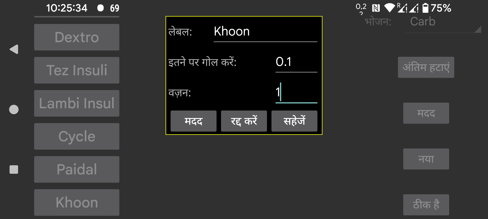

ar be de es fr hi it nl pl pt ru tr uk uz zh en
संख्याएं दर्ज करने के लिए उपयोग किए जाने वाले लेबल का नाम। आप बाएं मध्य मेन्यू में "नई मात्रा" का उपयोग करके एक निश्चित तारीख और समय से जुड़ी संख्या जोड़ सकते हैं। इन संख्याओं को ग्लूकोज ग्राफ़ में उस समय स्थिति पर या एक सूची में प्रदर्शित किया जा सकता है।
वॉच ऐप, Kerfstok में उपयोग किया जाता है। इस लेबल के तहत दर्ज की गई संख्याएं इस संख्या पर गोल की जाती हैं।
0= पूर्ण सटीकता, 0.5 = 0.5 के गुणकों पर गोल करें आदि।
जब 0 पर सेट होता है, तो संख्याएं उनके मान से स्वतंत्र ग्राफ़ में एक निश्चित ऊंचाई पर प्रदर्शित होती हैं। यदि वज़न 0 से अधिक है, तो इस लेबल के तहत दर्ज की गई प्रत्येक मात्रा को इस वज़न से गुणा किया जाता है और ग्लूकोज ग्राफ़ के समान निर्देशांकों में एक वर्ग के रूप में प्रदर्शित किया जाता है। उदाहरण के लिए, आप फिंगर प्रिक ग्लूकोज मापनों को ग्लूकोज सेंसर मापनों के समान तरीके से प्रदर्शित करने के लिए वज़न को 1 पर सेट कर सकते हैं।